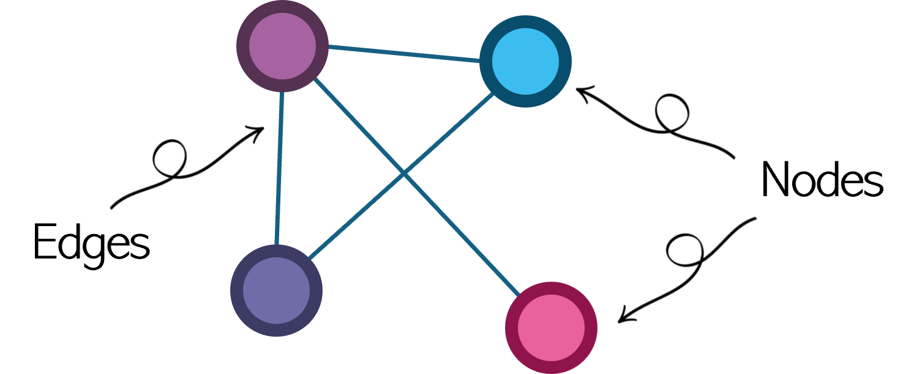
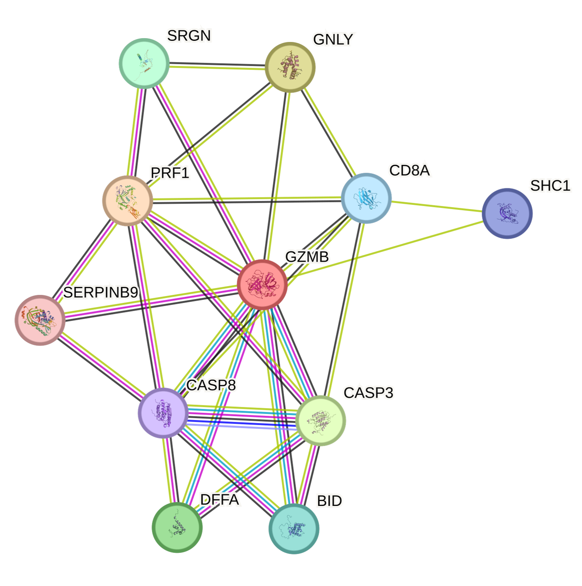
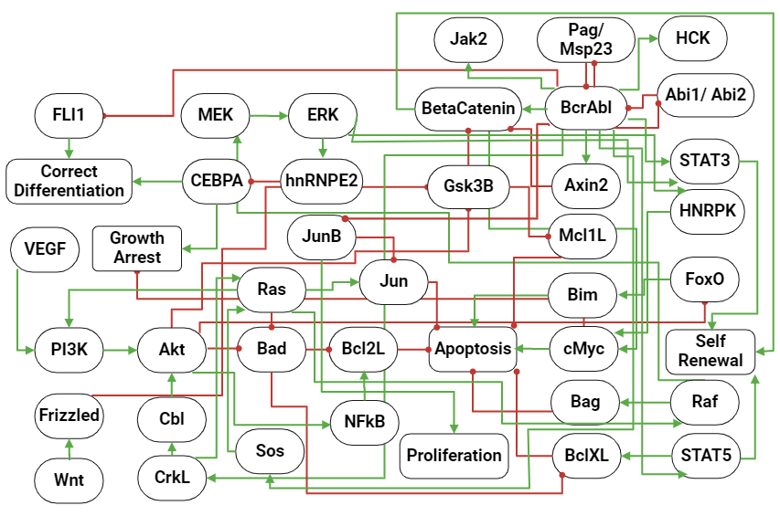
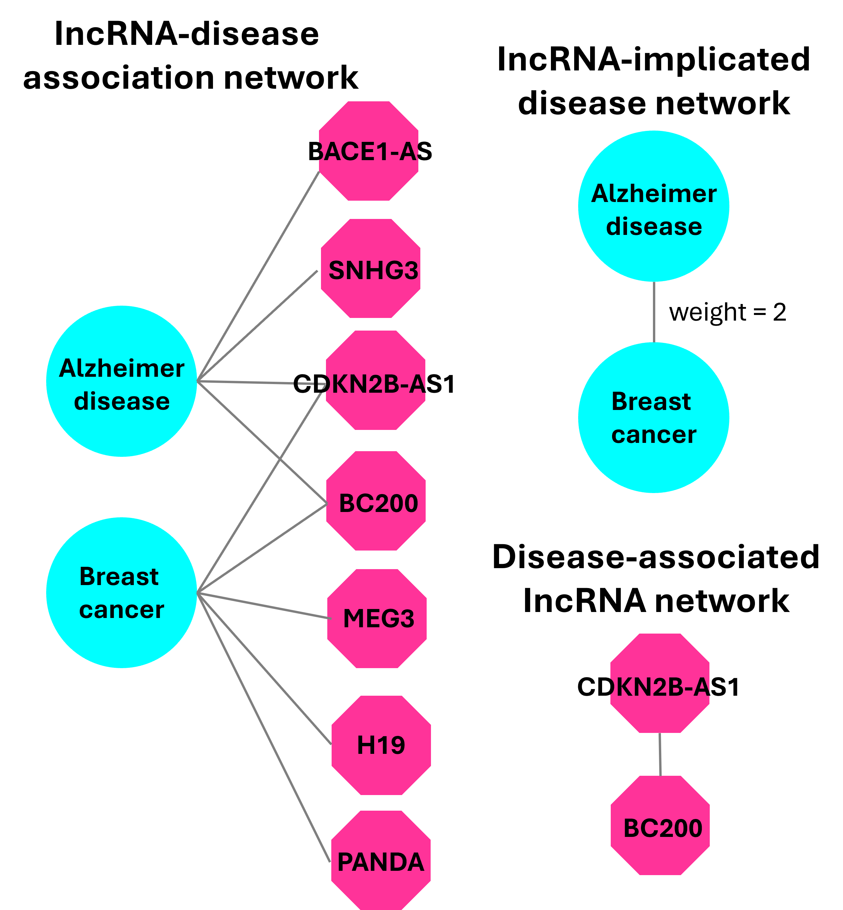
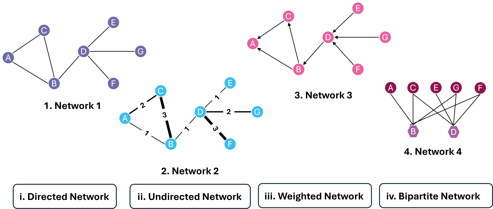

Learning Objectives
Introduction
Biological systems are inherently relational. Genes often regulate other genes, proteins interact with one another and signalling pathways transmit information through complex cascades. Networks provide a mathematical framework for representing and analysing these complex interactions. By representing biological entities as nodes and their relationships as edges, we can move beyond isolated components and instead study system-wide structure, connectivity and influence.
In this notebook, you will learn how to represent networks computationally and analyse them using Python and the NetworkX package. You will construct graphs from matrices and edge lists, quantify node importance using centrality measures and apply ranking algorithms such as Personalised PageRank to prioritise biologically relevant nodes. Throughout, the emphasis is on linking mathematical structure to biological meaning.
What is a network?
A graph is a mathematical representation that describes the relationships between objects. A simple graph (such as the one pictured, below) typically contains two types of objects:
- Nodes - also referred to as vertices, these are the entities of interest.
- Edges - also referred to as links or arcs. These form the bridges between objects.
In the pictured 'simple' network, there are four nodes, connected by four edges. Notice that in this network, the edges represent simple connections, without any 'flow' of signal implied. Thus, this network is referred to as an undirected network.

Types of edge
Besides representing the connections between nodes, networks can also contain other properties at both node and edge level. In the previous example, we saw that an edge can be represented as a simple connection, with undirected edges.
Let's take a closer look at a few other types of edge:
- Undirected edges: these are simple connections, that merely link two or more nodes without an implied flow of signal. In biological data, a common example might be in protein–to-protein interaction (PPI) networks, for example. We will actually learn more about these, later in these lessons.
- Directed edges: these are connections with a clear flow of signal implied. A common biological example is in metabolic or gene regulatory networks.
- Weighted edges: these can be undirected or directed edges, and have a weight or quantitative value associated with them. As an example, these weights can conceptually represent properties such as the reliability of an interaction, the correlation between linked gene expressions, or even sequence similarity between two genes. Edges can also be weighted to reflect topological parameters, such as centrality scores and clustering.
- Bipartite edges: these entail a more complex type of edge, connecting nodes from different groups in a network. Nodes of the same type are not at all connected in a network with bipartite edges. This edge type is often used to transform biological networks to study common components across nodes, and represent complex relationships across different types of data: for instance, gene-disease and enzyme-reaction associations in metabolic pathways.
Node properties
Similar to edge properties, nodes can also contain additional information other than the name of the entity. Below are a few examples of different properties nodes can have, that are commonly found in biological networks.
- Attribute: This can be a quantitative or qualitative value, and can define the characteristic of the entity in question. For instance, in a complex gene regulatory network, nodes may have group labels showing whether or not a node might be a transcription factor regulator, or a target gene. Attributes such as these, can also contain other information; anything from time and colour, through to centrality scores (a topological parameter discussed in the next bullet point).
- Topological parameters: a specific type of node attribute, topological parameters are of particular interest in this chapter, as they are mathematical properties that represent the spatial relations of nodes in a network, both globally (as in, the position of a node relative to the entire network) and locally (a node relative to other nodes to which it is directly connected). These properties are particularly important in interpreting the characteristic of the entity relative to the network, itself. Topological parameters will be discussed in more depth, further in this chapter.
Networks are widely used in biology to represent complex relationships. We have previously referenced protein-protein interactions (PPI) as one such example, whereby nodes represent an individual protein, and the edges connected to it, represent its interactions with other proteins in the network.
Undirected network example
Continuing in this vein, let's look at a PPI network of Granzyme B (GZMB) in humans, extracted from the STRING-DB database.

In this diagram, we can see the PPI network centers around the GZMB protein in Homo sapiens, where the edges connect proteins to one another. Note that the edges here have no arrowheads on them, and thus represent an undirected network.
Granzyme B is secreted by immune cells, and mediates apoptosis (or programmed cell death). GZMB is often secreted in conjunction with another protein called perforin, which facilitates the formation of a pore in the target cell membrane. In order to trigger apoptosis, GZMB cleaves and activates initiator caspase enzymes - two such caspases are CASP3 and CASP9. Thus, the network clearly shows an interaction between GZMB and both CASP3 and CASP8. If you would like to learn more about the interactions in this network, you can find out more on STRING-DB on the following link.
Directed network example
As an example of a directed network, let's take a look at the signalling regulation in Philadelpha chromsome positive Chronic Myeloid Leukemia (Ph+CML), referenced from Chuang et al., 2015.

In this network, key proteins and pathways dysregulated in CML are represented in capsule-shaped and rectangular nodes, respectively. Unlike the earlier GZMB PPI network example, this network contains two examples of directed interactions: activating (green) and inhibitory (red). All interactions represent a directed flow of information, indicating both the regulator and effector of the interaction.
Ph+ CML is characterised by the abnormal translocation between chromosomes 9 and 22, resulting in the fusion gene of BCR-ABL1. The presence of BCR-ABL1 leads to the upregulation of pro-survival and proliferation pathways such as JAK/STAT signalling (as indicidated by BcrAbl activating Jak2, STAT3, and STAT5 in the network shown), whist bypassing cell cycle checkpoint inhibitors in the Ras/MAPK/ERK pathway. BRC-ABL fusion also inhibits apoptosis through direct and indirect interactions with pro- and anti-apoptotic proteins. The importnace of BCR-ABL in Ph+CML drives the development of tyrosine kinase inhibitors, including lmatinib, Dastinib, and Nilotinib, to diminish CML tumour cell growth in CML patients.
Bipartite network example
Bipartite networks are usually used to study the association between nodes of the same type. An example of such an application is referenced in Yang et al., 2014.

In this diagram, we can see a portion of one of the networks constructed in this study. The initial IncRNA-disease association network is a bipartite network, inferring the IncRNAs associated to Alzheimer's disease (AD) and breast cancer (BC). From the bipartite network, both CDKN2B-AS1 and BC200 are associated to both AD and BC. Based on this, a IncRNA-implicated disease network can be constructed, connecting AD and BC with a weighted edge of 2. Similarly, a disease-associated IncRNA network can be constructed connecting the IncRNA nodes CDKN2B-AS1 and BC200.
Further examples: disease spread mapping
Networks can also be used to model how infection diseases spread. In a study published by Moon & Scoglio (2021), an example of a two-layer network model was used to estimate how contact tracing can impact the spread of COVID-19. The network model used comprises a mixture of both weighted and unweighted, undirected networks, with a staggering 445, 350 edges representing the individual households across Manhattan, NYC.
Another popular application of networks is the inference of gene regulatory crosstalk based on single omics or multiple omics data, or even single-cell data. This has been reviewed by Kim et al. (2023). Tehse gene regulatory networks (GRNs) are directed and contain two types of nodes: regulators and gene targets. Capturing the regulatory activity at multi-omics or single-cell levels, allows for a deeper understanding of the regulatory activity driving cellular identity and disease.
1.
Match the following networks (top) to the term (bottom) that best describes the edge properties of that network.

Summary
In this first section of this lesson, we introduced the foundations of network analysis by defining a network (graph) as a system of nodes and edges representing relationships between biological entities. We explored different network types, including directed, undirected, and weighted graphs, and examined how they can be represented computationally using an adjacency matrix or an edge list. Using NetworkX, we constructed graph objects from NumPy arrays and Pandas DataFrames, enabling programmatic inspection of network structure. Together, these concepts establish the framework for quantifying and interpreting connectivity patterns within complex biological systems.